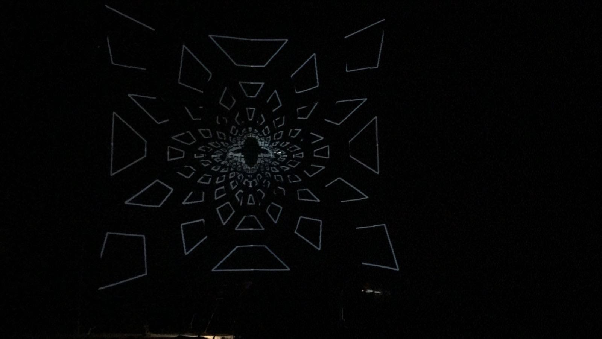
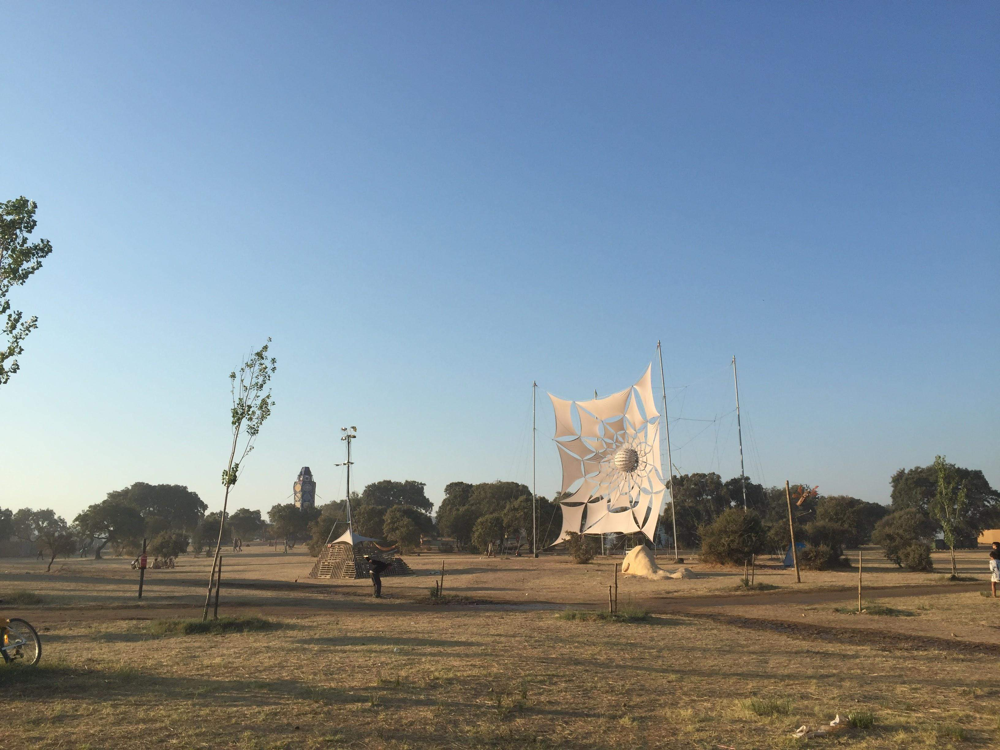
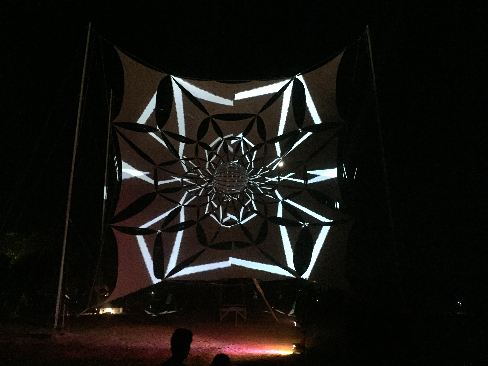
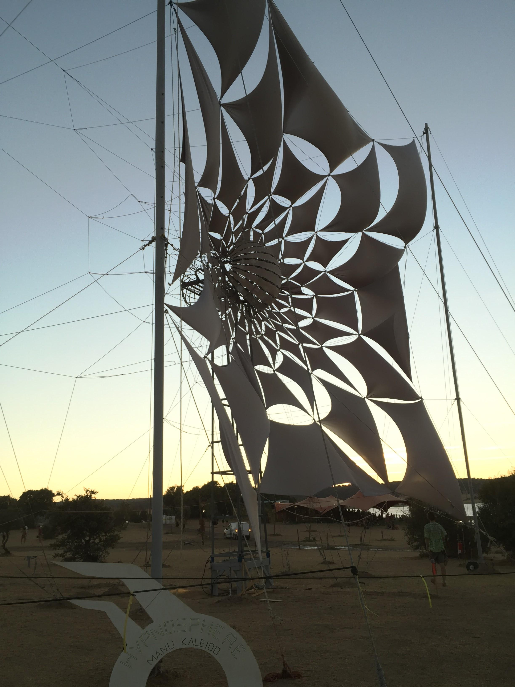
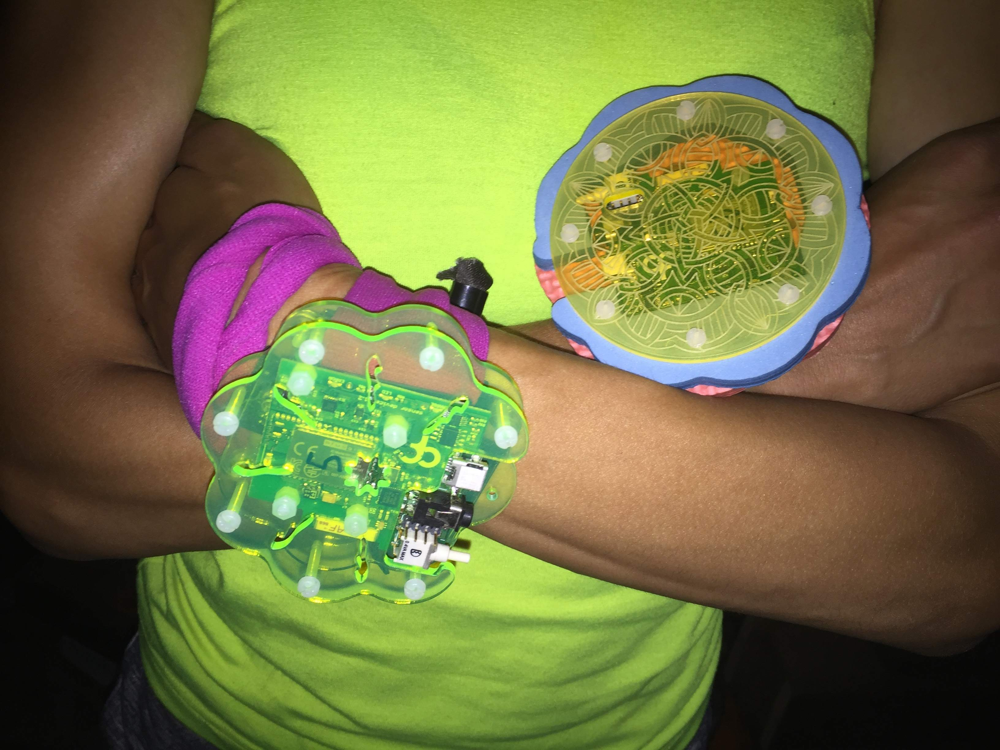
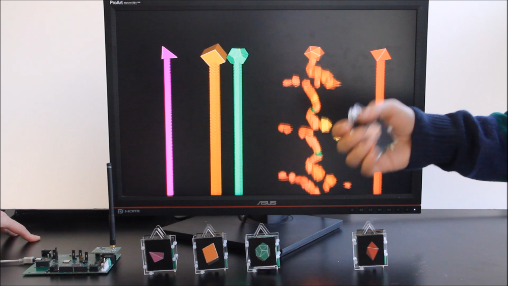
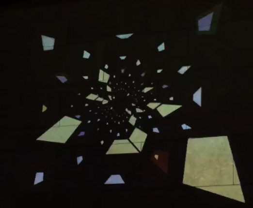

About
The Collective Motion Laboratory
For those who have experienced it, there is no doubt that trance rituals can profoundly impact human experience and connect individuals in a larger group consciousness. Yet moments like this are rare, and objectively-speaking, we have little idea what transpires to create such transformations. The Collective Motion Laboratory was formed with the purpose of documenting the subjective and objective phenomena of collective consciousness, especially in the context of electronic dance music. The group aims to use technology and scientific methodology to study and ultimately to enhance the power of such liminal experiences.
Alexandre Azinheira | Ana Nunes | Eric DeWitt | Filipe Carvalho | Gautam Agarwal | Gil Costa | Gonçalo Guiomar | Gonçalo Lopes | João Frazão | Romain Ligneul | Scott Rennie | Tiago Quendera | Zachary Mainen |
Projects
MindCrystal
MindCrystal
Trance rituals connect individuals in a larger group consciousness. The Collective Motion Laboratory was formed with the goal of exploring the phenomena of this collective consciousness. Technology and scientific research are used to both study and enhance the power of such liminal experiences. A set of modules that analyse and broadcast movement or other bio-signals to artists for use in their live performances.

Video module: High-performance infrared video cameras enable data collection in the dark.

MESH module: Wireless movement detection using handheld 9-axis inertial sensors. High performance dedicated WiFi protocol allows high precision synchronous recording of up to 100 movement sensors.

EEG/EKG module: Wireless recording of bio-signals, including electroencephalography (EEG, brain) and electrocardiography (EKG, heart).
All data is sent to a computer for motion processing and signal analysis. The results are then broadcast to artists for use in their live performances, where they can map the signals using their software to control lasers, sound, video or anything they want.

The Collective Motion Lab will help artists and participants discovering new ways to experience music and collective rituals.
Psiloscope
Psiloscope @ Boom 2016
Trance rituals transform group consciousness. It is thought that music provides a rhythmic driver that increases the coherence between individuals’ conscious experience. This is maximized when the kinesthetic experience of one’s own body is synchronized with both the music and the visual experience of others’ movements. Psytrance producers have used computers and audio technology to explore the power of sound to enhance these experiences and extend them to groups of thousands of people. The potential for visual manipulation to enhance collective conscious experience remains comparatively unexplored, largely because the necessary technology has not been available. If the motion of each individual could be captured, enhanced and visualized how could this new medium of feedback alter individual and collective experience? We propose to find out…
      